HARPY
| 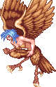 에잉모어 상공 (스테이지 4) 보스 '하피' |
기본 정보
픽 포켓으로 얻을 수 있는 아이템
없음 클리어 시간 측정의 시작 시점
하피의 HP가 보이는 시점 부터
최단 시간 클리어 기록
클레릭 4:47 |
|||||||||
드랍 가능한 아이템 - 돈 + 점수 아이템 + 그외 아이템의 구성으로 떨어진다.
돈 : 10sp x1 + 1sp x5 (15sp) / 10sp x2 (20sp) / 10sp x1 + 5sp x3 (25sp)
기타 : 
| 점수 아이템 : | |
| 도구류 : | |
상반신은 인간 여성의 형태를 하고 하반신은 새의 형태를 하고 있는 맨 스콜피온에 이은 인수합체 형태의 몬스터. 원래는 좀 더 추한 형상을 하고 있다. 왠만한 몬스터보다도 사악하고 비열하다. 룰상에서는 듣는 이를 현혹시키는 노래를 부르는 능력도 있으나 다행이도 이 게임에서는 나오지 않는다.
패턴이 다양하며 공중을 날 수 있기 때문에 한번 날아다니기 시작하면 클래스에 따라 견재하기가 쉽지 않으며 더불어서 쉐도우 엘프들의 견제가 만만찮아서 익숙치 않은 플레이어에게는 상당히 까다로워지는 보스다. 특성과 패턴을 확실히 익힐 필요가 있다.
패턴이 다양하며 공중을 날 수 있기 때문에 한번 날아다니기 시작하면 클래스에 따라 견재하기가 쉽지 않으며 더불어서 쉐도우 엘프들의 견제가 만만찮아서 익숙치 않은 플레이어에게는 상당히 까다로워지는 보스다. 특성과 패턴을 확실히 익힐 필요가 있다.
패턴 분석
등장
비행선 밖에서부터 등장해서 비행선 바닥으로 수직으로 급강하 한다. 이때 맞으면 데미지를 입으며 가드가 가능하다. 등장하는 시간부터 시간이 측정되는 데 비해 공격가능한 시점이 좀 더 뒤기 때문에 빠른 시간의 클리어에 방해가 된다 할 수 있다.
※ 붉은색은 파이터가 입는 데미지, 푸른색은 매직 유저가 입는 데미지.
클레릭/드워프는 파이터에 가까운 데미지를, 시프/엘프는 매직 유저에 가까운 데미지를 입는다.
비행선 밖에서부터 등장해서 비행선 바닥으로 수직으로 급강하 한다. 이때 맞으면 데미지를 입으며 가드가 가능하다. 등장하는 시간부터 시간이 측정되는 데 비해 공격가능한 시점이 좀 더 뒤기 때문에 빠른 시간의 클리어에 방해가 된다 할 수 있다.
※ 붉은색은 파이터가 입는 데미지, 푸른색은 매직 유저가 입는 데미지.
클레릭/드워프는 파이터에 가까운 데미지를, 시프/엘프는 매직 유저에 가까운 데미지를 입는다.
| 수직 급 상승 후 급 강하(22/31) | |
| 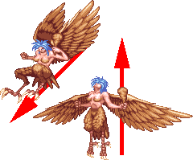 | 말 그대로 수직으로 급 상승 후 대각선을 그리며 급강하를 하는데 속도가 상당히 빠르기 때문에 솟구치는 걸 보자마자 위 아래로 피하는게 좋다. 쓰러졌다가 일어나면서 시도하는 공격이기도 하며 일어나면서 급상승 하는 움직임이 더 무섭다. 판정이 상당히 강하기 때문에 접근해서 다운공격을 하다가는 이 움직임에 데미지를 입을 수 있다. 스턴상태로 쓰러졌을 때 주로 나온다. |
| 급 강하(22/31) | |
| 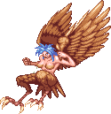 | 공중에 있을 때 급 강하를 하면서 발톱으로 공격한다. 급 상승만 빼면 사실 위의 공격과 같다. 궤도가 정해져 있기 때문에 피하기 어렵지 않다. |
| 깃털 날리기 (17/21) | |
| 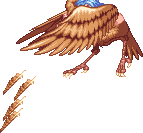 | 날고 있는 도중에 대각선 아래를 향해서 4개의 깃털을 날린다. 속도가 빠른 편이며 반응속도가 빠르다면 보고 가드를 해도 되고 아니면 하피가 자세를 잡을 때 드워프/파이터라면 A+B나 시프/매직 유저라면 백스텝을 써도 되고 아니면 하피 아래쪽으로 슬라이딩을 하면 깃털에 맞지 않는다. |
| 근접 공격 (19/26) | |
| 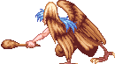 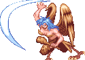 |
지상에 있을 때 들고 있는 무기로 내려치거나 손톱으로 긁으면서 살짝 돌진하는 콤보 형태의 공격. 그러나 연속으로 공격을 맞지는 않으니 다행이다. 좀 특이한 공격인데 보통 공격을 하기 시작하면 그 모션이 고정되기 마련인데 이 공격은 도중에 캔슬(!)을 할 수 도 있다. 주로 위아래로 접근 할 때 캔슬이 나오는데 캔슬 후 방향전환이 자유로우며 무기나 손톱을 휘두르는 도중에 무적시간이 존재하기 때문에 빈틈을 노리고 접근했다가는 오히려 당하기 딱 좋다. 거기다가 거리 조절까지 하며 또한 손톱공격 후 빈틈없이 바로 방망이를 휘두르기도 하니 빈틈을 노리기가 애매한 공격이다. 손톱을 긁을 때의 뒤를 정확히 노리거나 아니면 가드 후 공격하는게 좋으며 아니면 그림자치기 형태로 대쉬를 해서 부딪쳐서 하피를 쓰러뜨리는 것도 괜찮다. |
| 돌진 (22/31) | |
| 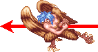 | 지상에 있을 때 갑자기 플레이어를 향해 돌진 한다. 쓰러져 있다가 일어날 때 이 공격을 하기도 한다. 판정이 좋기 때문에 맞공격은 좋지 않고 위 아래로 피하는게 좋다. |
| 공중 잡기 (16/16) | |
| 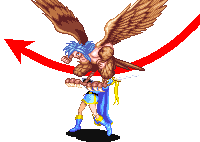 | 화면 위로 사라졌다가 플레이어 뒤쪽으로 급강하를 하면서 발로 플레이어를 낚아채서 끌고 올라간 다음 떨어뜨리는 공격이다. 가드가 불가능 하기 때문에 A+B로 제압하거나 시프/매직 유저는 백스텝으로 회피하거나 아니면 긴 슬라이딩으로 회피하자. 내려오는 타이밍에 맞춰서 위 아래로 피하는 것도 가능하다. |
| 날개짓 (날개에 닿을 경우 22/29) | |
| 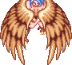 공중 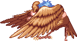 지상 |
날개짓을 해서 바람을 일으켜 플레이어를 화면 구석으로 몬다. 플레이어 뿐 만 아니라 같이 나오는 쉐도우 엘프들도 같이 구석으로 몰리기 때문에 플레이어와 쉐도우 엘프가 겹치는 상황이 잘 나오는데 A공격이 부실한 시프나 드워프는 특히 고생하기 쉽다. 지상에서 일으킬 때도 있고 공중에서 일으킬 때도 있는데 지상의 경우 하피의 등뒤로 넘어가면 영향을 받지 않는다. 그런데 날개 포함 몸체전체에 판정이 있어서 접근했다가는 데미지를 입기 쉽다. 특히 공중에 있을 때 어설프게 공중공격을 시도 하는건 삼가는게 좋다. 공중에서 날개짓을 할 때 오른쪽에서 공격하려 하면 유난히 피해입기 쉬우니 조심하도록 한다. 시프나 엘프라면 점프 슬링/화살로 견제하는 것도 좋다. |
지원군
쉐도우 엘프들이 지원 공격을 한다. 하피가 날아다니고 쉐도우 엘프들이 흩어지기 시작하면 정신 없다.
칼든 쉐도우 엘프와 와이번을 탄 마법사 쉐도우 엘프가 나오는데 파이어 볼은 불 내성의 반지와 주문 무효화 반지가 있다면 피해를 입지 않으니 두가지 중 하나가 있으면 훨씬 수월하다. 엘프는 불 내성의 반지를 상자에서 얻을 수 있어서 유리하다.
1인 플레이시
칼든 쉐도우 엘프 x 3 → (마법사 쉐도우 엘프 → 칼든 쉐도우 엘프 x 2) x 4
2인 플레이시
칼든 쉐도우 엘프 x 3 → (마법사 쉐도우 엘프 → 칼든 쉐도우 엘프 x 3) x 4
3~4인 플레이시
칼든 쉐도우 엘프 x 3 → (마법사 쉐도우 엘프 → 칼든 쉐도우 엘프 x 4) x 4
칼든 쉐도우 엘프와 와이번을 탄 마법사 쉐도우 엘프가 나오는데 파이어 볼은 불 내성의 반지와 주문 무효화 반지가 있다면 피해를 입지 않으니 두가지 중 하나가 있으면 훨씬 수월하다. 엘프는 불 내성의 반지를 상자에서 얻을 수 있어서 유리하다.
1인 플레이시
칼든 쉐도우 엘프 x 3 → (마법사 쉐도우 엘프 → 칼든 쉐도우 엘프 x 2) x 4
2인 플레이시
칼든 쉐도우 엘프 x 3 → (마법사 쉐도우 엘프 → 칼든 쉐도우 엘프 x 3) x 4
3~4인 플레이시
칼든 쉐도우 엘프 x 3 → (마법사 쉐도우 엘프 → 칼든 쉐도우 엘프 x 4) x 4
기타 특성
◎ 왠만한 콤보가 다 들어가는 몇 안되는 보스다. 예를 들으면 시프의 슬래쉬 x 4 콤보가 가능하다. 또한 파이터의 무한 대공이 가능하기 때문에 파이터에게는 아주 쉬운 보스가 된다.
◎ 또한 오일을 맞고 튕겨 오를 때 콤보를 넣는 것이 가능하다.
◎ 쓰러졌다가 일어날 때 빈틈없고 판정이 강력한 공격 패턴이 두가지나 있어서 맘놓고 다운공격을 하기 어렵다. 따라서 다운 공격을 할 때도 철저하게 그림자 치기 위치를 유지해야 하며 또한 평상시 보다 더 거리를 둬야 한다.
◎ 쓰러지는 척 하다가 다시 비행을 하는 속임수(?)를 쓰기도 한다. 이점을 항상 신경써야 한다.
문제는 쓰러지는 상황이 자주 연출되는데 이 때마다 이런 속임수(?)가 자주 나온다는 것 이다.
◎ 또한 오일을 맞고 튕겨 오를 때 콤보를 넣는 것이 가능하다.
◎ 쓰러졌다가 일어날 때 빈틈없고 판정이 강력한 공격 패턴이 두가지나 있어서 맘놓고 다운공격을 하기 어렵다. 따라서 다운 공격을 할 때도 철저하게 그림자 치기 위치를 유지해야 하며 또한 평상시 보다 더 거리를 둬야 한다.
◎ 쓰러지는 척 하다가 다시 비행을 하는 속임수(?)를 쓰기도 한다. 이점을 항상 신경써야 한다.
문제는 쓰러지는 상황이 자주 연출되는데 이 때마다 이런 속임수(?)가 자주 나온다는 것 이다.
공통 공략법
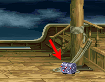
위 스샷에 보이는 스테이지 오른쪽의 상자는 하피와 싸우기 전에 미리 다른 곳으로 치우는게 좋다. 오른쪽 구석에서 하피와 싸우는 공략법이 많은데 상자가 있으면 상당히 방해 되기 때문이다.
그 외에는 클래스 마다 대응 방법이 꽤나 다르다.
해머 2히트 시키기
보통 오른쪽에서 해머를 던지면 1히트만 되지만 왼쪽에서 던지면 2히트를 노릴 수 있다.
해머를 던지는 위치가 중요한데 그 위치는 아래 스샷과 같다. (그림자 기준으로, 단 클레릭 1p는 좀 더 뒤에서 던져야 한다) 위 아래로는 차이가 나도 상관없지만 좌우로는 2~3도트 정도 차이 내에서 던져야 한다.
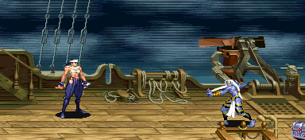
던지는 타이밍은 시프/파이터는 하피가 화면에 보였다가 화면 위로 막 사라질 때 쯤 던지고 드워프나 엘프라면 하피가 화면에 보일 때부터 던지는게 좋으며 클레릭은 시프/파이터 보다 살짝 늦게 던지는게 좋다.
두가지 불안요소가 있는데 첫번째는 해머를 던지는 타이밍이 늦는다면 99%의 확률로 해머가 보기좋게 빗나간 다는 것이고 두번째는 간혹 타이밍과 자리가 어긋나면 해머를 맞고 단검으로 바꾸는 사이에 하피의 스턴상태가 바로 풀려서 공중에 뜬다는 것이다.
특히 타이밍이 늦으면 시도하지 않으니만 못하니 타이밍 잡기가 힘들다면 차라리 약간 일찍 던지는게 좋다. 성공시키면 상당히 시간을 줄일 수 있지만 실패하면 꽤나 괴로워지는 위험부담이 있는 방법이라는 점을 명심하도록 한다.
해머를 맞춘 다음의 공략방법은 각 클래스별 공략에서 확인하도록 하자.